大语言模型（LLM）对齐项目，集成了监督微调（Supervised Fine-Tuning, SFT）、群体相对策略优化（Group Relative Policy Optimization, GRPO）和直接偏好优化（Direct Preference Optimization, DPO）三种方法。
本项目系统性地探索并实现了大语言模型的三种核心对齐技术：监督微调 (SFT)、群体相对策略优化 (GRPO) 和直接偏好优化 (DPO)。项目从一个基线模型的零样本评测出发，逐步深入到不同对齐算法的实现、消融研究和性能分析，全面评估和对比了这些方法在特定任务上的有效性。
1. Zero-Shot Baseline：在GSM8K数学推理任务上对 Qwen-2.5-Math-1.5B 进行了零样本评测。结果揭示了该模型在遵循复杂格式化指令上的严重不足（格式正确率仅2.5%），从而确立了后续对齐工作的必要性。
2. 监督微调 (SFT) 的系统性研究：通过在不同规模的GSM8K子集上进行SFT实验，验证了SFT能显著提升模型性能。更重要的是，实验揭示了模型在SFT过程中普遍存在快速过拟合现象。
3. GRPO算法的深度实现与消融研究：完整实现了GRPO算法，还通过一系列消融研究），分析了其内部关键组件的作用，包括：
4. DPO算法的实现与验证：在 Llama-3.1-8B 模型和 Anthropic HH-RLHF 偏好数据集上，实现了直接偏好优化（DPO）。实验验证了DPO作为一种无需强化学习的轻量级对齐方法，能够有效引导模型学习人类偏好。
本项目的所有实验均在以下配置的服务器上运行：
克隆项目仓库：
git clone https://github.com/wenjia5767/GRPO.git
cd GRPO
安装依赖库：
pip install -r requirements.txt
| Track | Model / Data | Key Setting | Format OK ↑ | Val Acc ↑ | Steps to Peak |
|---|---|---|---|---|---|
| Zero-shot | Qwen-2.5-Math-1.5B / GSM8K | r1_zero prompt | 2.5% | 0.38% | — |
| SFT | Qwen-2.5-Math-1.5B / GSM8K | n=128 / LR=5e-6 | 93.40% | 25.47% | 10 |
| SFT | Qwen-2.5-Math-1.5B / GSM8K | n=256 / LR=5e-6 | 95.15% | 25.78% | 8 |
| SFT | Qwen-2.5-Math-1.5B / GSM8K | n=512 / LR=5e-6 | 95.30% | 26.38% | 8 |
| SFT | Qwen-2.5-Math-1.5B / GSM8K | n=1024 / LR=5e-6 | 94.39% | 26.38% | 9 |
| REINFORCE | Qwen-2.5-Math-1.5B / GSM8K | G=8, epochs_per_rollout=1 | 99.39% | 80.81% | 85 |
| GRPO no baseline | Qwen-2.5-Math-1.5B / GSM8K | G=8, epochs_per_rollout=1 | 99.01% | 15.24% | 128 |
| GRPO length norm | Qwen-2.5-Math-1.5B / GSM8K | G=8, epochs_per_rollout=1 | 99.47% | 80.36% | 100 |
| GRPO no std norm | Qwen-2.5-Math-1.5B / GSM8K | G=8, epochs_per_rollout=1 | 99.62% | 81.80% | 87 |
| GRPO off policy | Qwen-2.5-Math-1.5B / GSM8K | G=8, epochs_per_rollout=5 | 99.84% | 81.34% | 65 |
| GRPO no clip | Qwen-2.5-Math-1.5B / GSM8K | G=8, epochs_per_rollout=5 | 99.69% | 83.16% | 51 |
| DPO | Llama-3.1-8B / HH-RLHF | β=0.1 | — | ValAcc 67% | — |
Qwen-2.5-Math-1.5B 模型在 GSM8K 数据集上的零样本数学推理能力。 Qwen-2.5-Math-1.5Br1_zero 提示模板进行格式化。该模板要求模型在 <think> 标签内生成其推理过程，并在 <answer> 标签内生成最终的数值答案。vllm 库进行高效的模型推理生成。r1_zero_reward_fn 函数来解析模型生成的文本，并将提取出的答案与标准答案进行比较打分。vllm, datasets, 和 transformers。python alignment/gsm8k_baseline.py
结果在以下文件中呈现：gsm8k_eval_results.jsonl (包含每个样本的详细结果) 和 gsm8k_eval_summary.json (包含整体的性能指标)。
在 GSM8K 测试集的 1319 个样本上，模型的基线性能 (baseline performance) 评测结果如下：
{
"num_examples": 1319,
"format_rate": 0.025018953752843062,
"accuracy": 0.0037907505686125853,
"avg_reward": 0.0037907505686125853,
"results_path": "gsm8k_eval_results.jsonl"
}
<think>/<answer> 格式的能力较差，导致格式正确率 (format rate) 极低，仅约 2.5%。指令遵循能力缺失
<think>/<answer> 这种严格的 XML 风格的输出格式，导致格式正确率 (format rate) 仅有约 2.5%。Qwen-2.5-Math-1.5B 模型虽然可能具备一定的数学知识，但在零样本（Zero-shot）场景下，其指令遵循 (Instruction Following) 能力不足以应对这种复杂的、结构化的输出要求。模型没有被充分地微调来理解并执行这种特定的格式指令。准确率是格式错误的直接后果
r1_zero_reward_fn 评估函数必须先成功解析出 <answer> 标签里的内容，然后才能判断答案是否正确。既然只有 2.5% 的输出格式正确，那么理论上的最高准确率也已经被限制在了 2.5%。这揭示了一个关键问题：模型表达答案的能力，成为了评估其推理能力的严重障碍。对零样本评测方法评价
1.5B 参数规模的模型，在这种需要复杂推理和严格格式控制的任务上，简单的零样本提示（Prompting）策略是远远不够的。在 GSM8K 数学推理数据集上进行监督微调（Supervised Fine-Tuning, SFT）, 主要目标是分析训练数据集规模对模型性能的影响，并观察训练动态，特别是过拟合现象。
核心目标是在不同规模的 GSM8K 训练子集上微调 Qwen2.5-Math-1.5B 模型。通过追踪模型在不同训练步数下的验证准确率探究：
Qwen2.5-Math-1.5B<think> 标签内生成思考过程（Chain-of-Thought），并在 <answer> 标签内给出最终的数值答案。使用标准的监督微调（SFT）目标进行训练，即最小化在目标回复（response tokens）上的负对数似然损失（Negative Log-Likelihood Loss）。每个实验使用不同数量的训练样本：
n = 128n = 256n = 512n = 1024n = 7473 (全量数据集)vLLM 框架在独立的 GPU 上进行快速高效的文本生成和评估。<answer> 标签内的数值与标准答案完全匹配，则认为该回答正确。实验结果通过以下图表进行可视化呈现。
以下图表分别展示了在不同训练集规模下，模型验证准确率随训练步数变化的曲线。
|
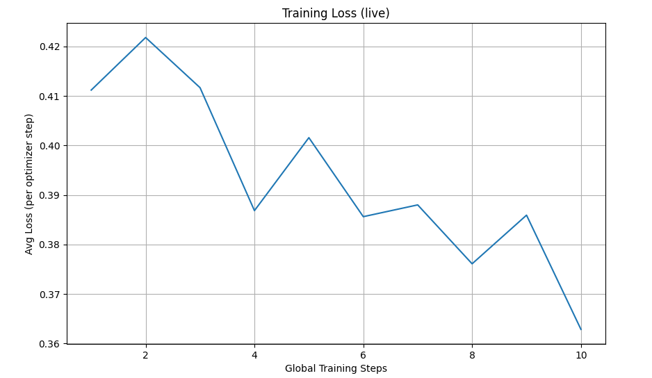 loss n=128 |
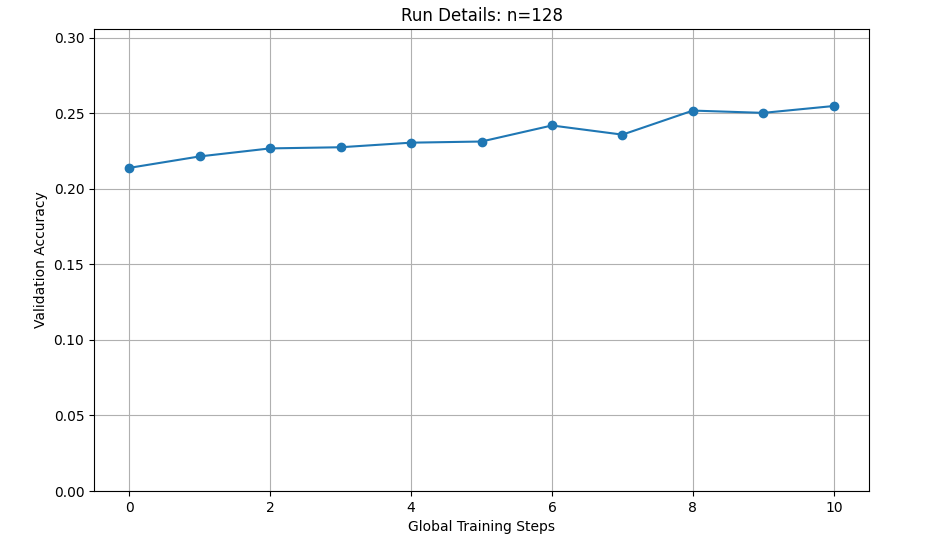 validation accuracy n=128 |
|
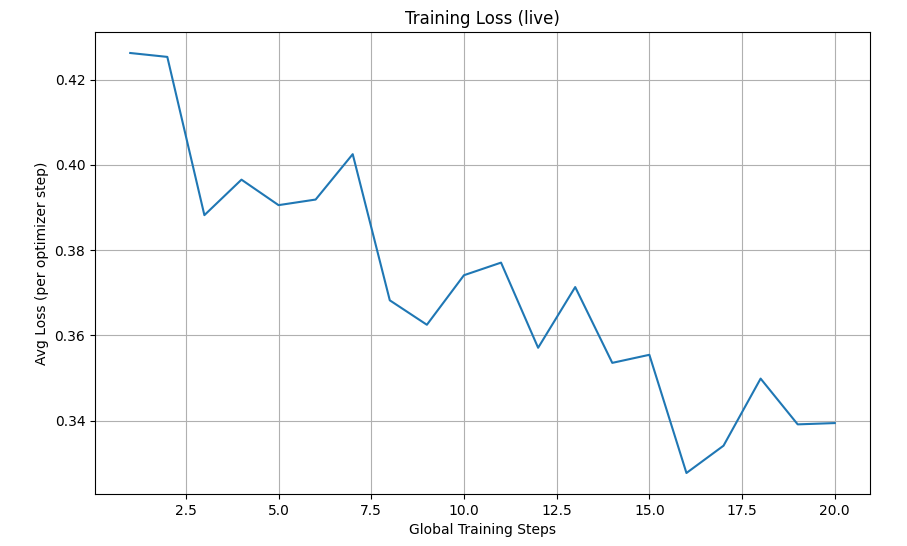 loss n=256 |
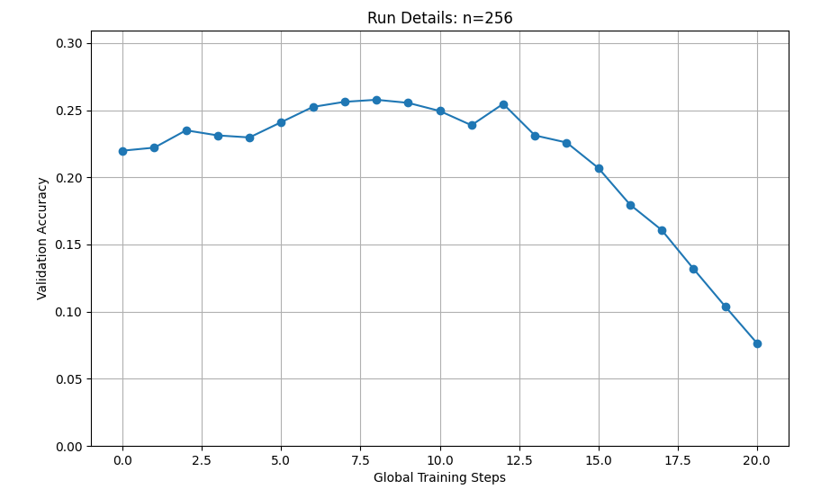 validation accuracy n=256 |
|
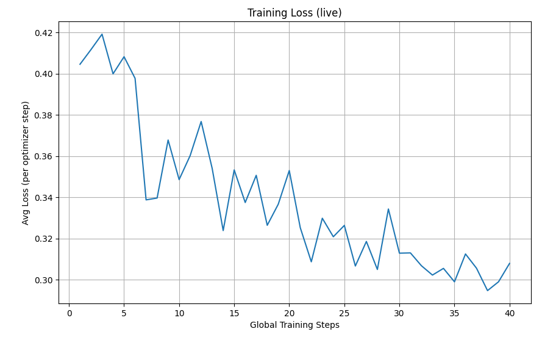 loss n=512 |
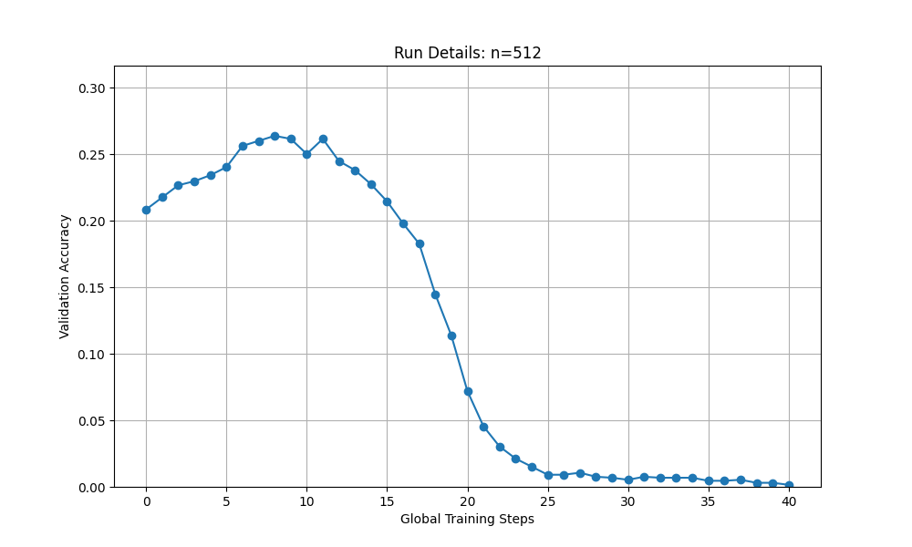 validation accuracy n=512 |
|
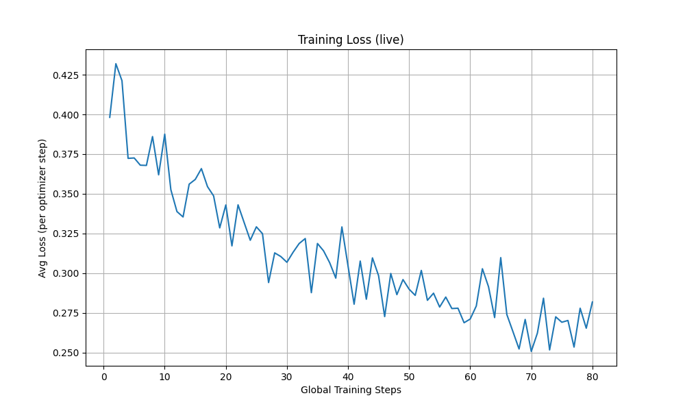 loss n=1024 |
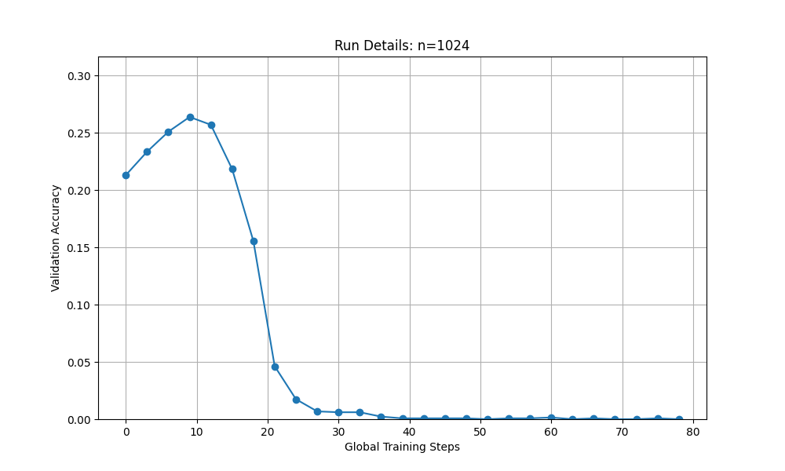 validation accuracy n=1024 |
|
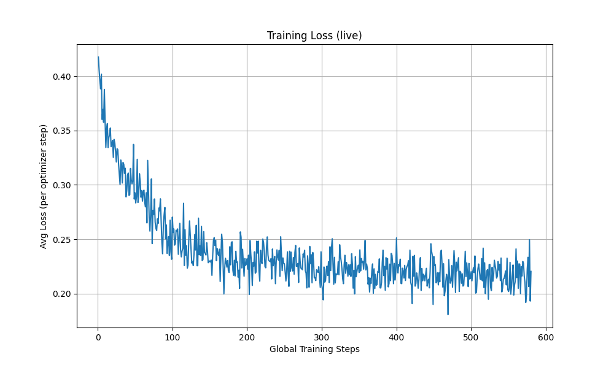 loss n=1024 |
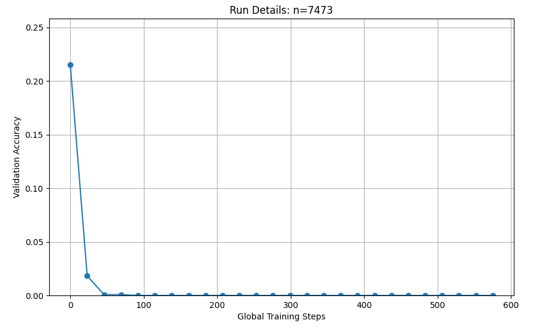 validation accuracy n=1024 |
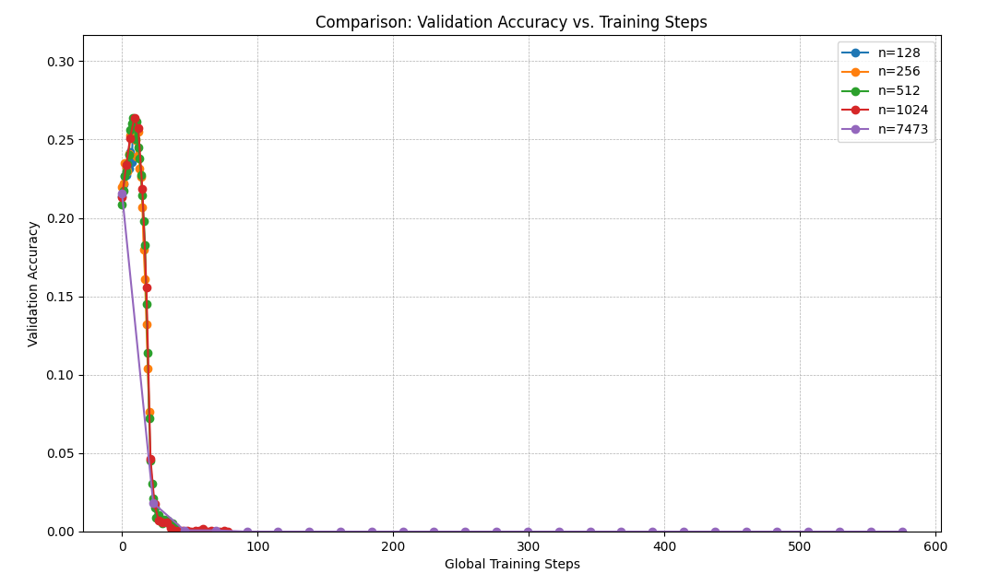
快速过拟合是主要问题：在几乎所有的实验中（除了 n=128 可能因训练步数不足），验证准确率都呈现出明显的“先升后降”模式。准确率先是上升至一个峰值，随后急剧下降。这是典型的过拟合（Overfitting）迹象。模型开始“记忆”训练样本，而不是学习通用的解题能力。
最佳性能出现在训练早期：模型的最高验证准确率在训练过程的极早期就已达到，通常在前 10-15 个全局训练步（Global Training Steps）内。对于全量数据集（n=7473），达到峰值的速度甚至更快。
早停（Early Stopping）策略至关重要：这些结果有力地证明了早停策略的必要性。在模型达到性能峰值后继续训练，不仅效率低下，而且对其泛化能力有显著的负面影响。表现最好的模型检查点（checkpoint）往往来自训练的早期阶段。
数据集规模的影响：虽然更大的数据集能带来稍高的峰值准确率，但它并不能阻止过拟合的发生，仅仅是稍微推迟了性能开始下降的时间点。这表明，对于此任务的 SFT，少量高质量的样本配合极短的训练，可能比在海量数据上进行长时间的训练更为有效。
GRPO 是一种用于强化学习（RL）的策略梯度算法。它的核心思想是通过简化优势估计和引入 PPO 式的裁剪机制来提高训练的稳定性和效率。
GRPO 解决了传统 RL 算法在 LLM 上遇到的两个主要挑战：
在传统的 RL 中，通常需要一个独立的价值函数 (value network) 作为基线来估计优势函数，这增加了训练的复杂性。GRPO 巧妙地解决了这个问题：
公式：
GRPO 采用了与 PPO (Proximal Policy Optimization) 类似的裁剪机制，以限制策略更新的幅度，防止新策略与旧策略偏离太远，从而保证训练的稳定性。
公式：
典型的 GRPO 训练循环如下：
GRPO 的强大之处在于，它通过巧妙的优势估计和裁剪机制，使得离策略训练成为可能，从而极大地提高了训练的数据利用效率。
Qwen-2.5-Math-1.5B我们进行了一系列对比实验来验证 GRPO 算法不同组件的有效性。
目的: 对比未使用基线的标准策略梯度方法，与使用标准化优势函数（即将奖励减去其均值并除以标准差）的改进方法，以评估后者在降低策略梯度方差、加速模型收敛及提升最终性能方面的有效性。
方法: 分别设置 loss_type='reinforce_with_baseline' 和 loss_type='no_baseline' 进行了两次独立的训练。
No Baseline (简单 REINFORCE):
With Baseline:
|
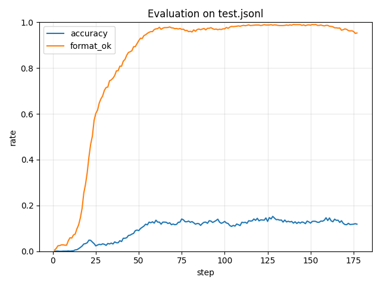 REINFORCE |
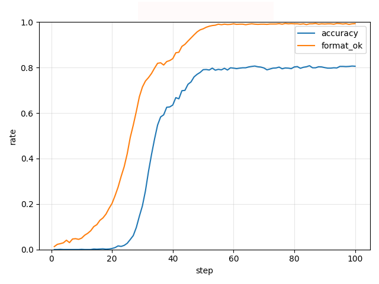 With Baseline |
reinforce_with_baseline) 的版本收敛更稳定，最终达到的验证集准确率也更高。With Baseline的模式方差更低，收敛更加稳定，且标准化后advantage的尺度基本恒定，避免了无基线时reward方差变化引起的忽大忽小的更新。而相比较下，REINFORCE提高训练步数，格式准确率有明显提高，答案准确率却无法提高，说明模型先学会输出模板，而对解题能力的credit需要更地方差的信号才能持续推进。masked_mean vs. masked_normalize) 目的: 比较两种不同的损失长度Normalize方法对最终性能的影响。
方法: 分别设置 length_normalization_type 为 masked_mean 和 masked_normalize 进行了两次 GRPO 训练。
假设序列总损失为
masked_mean:
masked_normalize:
其中 是当前批次中的最大序列长度。
|
Masked Mean |
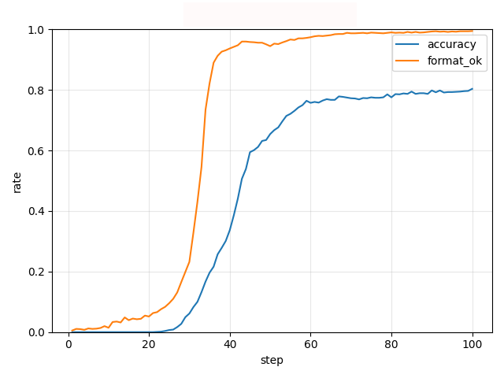 Masked Length Normalize |
masked_mean（按有效 token 数量归一化）在理论上更精确，因为它不受最大长度 max_length 的影响。目的: 验证在Group Normalize Advantage时，去掉除以标准差（即Advantage标准化）是否会对结果产生影响。
方法: 分别设置 use_std_normalization=True 和 use_std_normalization=False 进行了两次 GRPO 训练。
Mean-Only Normalization:
Standard Deviation Normalization (GRPO 标准方法):
|
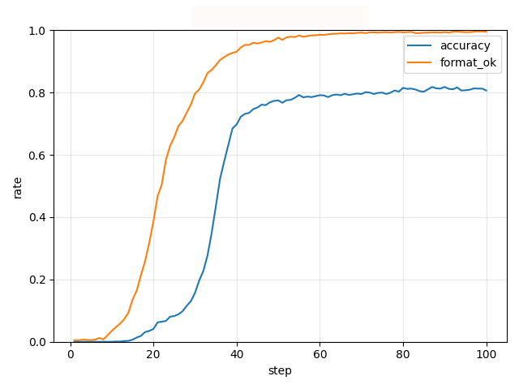 Mean Only Norm |
Standard Deviation Norm |
True) 能够进一步稳定优势的范围，使得学习过程对奖励的绝对大小不那么敏感，从而获得了更快的收敛速度，但在该实验上测试集的准确度并没有明显的上升。目的: 实现并验证off-policy GRPO 训练的有效性。
方法: 在一次采样后，进行了 5 个epoch的训练 (epochs_per_rollout_batch=5)。在后续epoch，策略 已经改变，但仍然使用第一个周期开始前计算的旧策略对数概率 old_log_probs 来计算Clip损失。
off policy 的另一核心是重要性采样比率 ，并将其应用在Clip目标中。
|
On Policy No Clip |
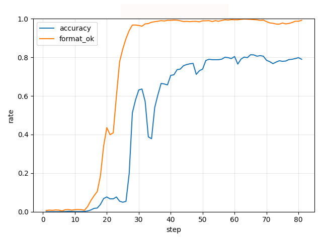 Off Policy with Clip |
目的: 验证 PPO 风格的Clip机制在 GRPO 中的作用。
方法: 实现了一个不带裁剪的损失类型 "GRPO-No-Clip"，并将其与标准的 "grpo_clip" 损失进行了对比。
GRPO-No-Clip (无裁剪):
GRPO-Clip (有裁剪):
|
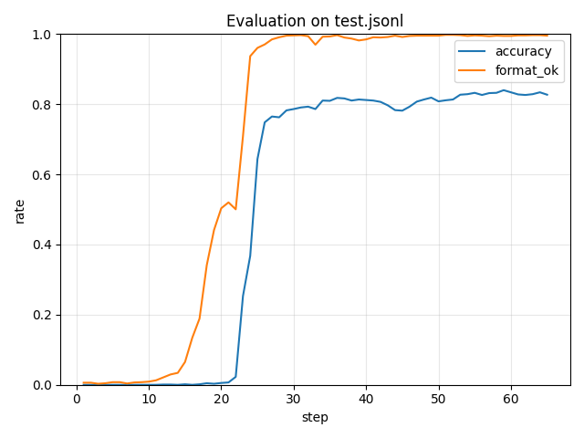 Off Policy No Clip |
Off Policy with Clip |
|
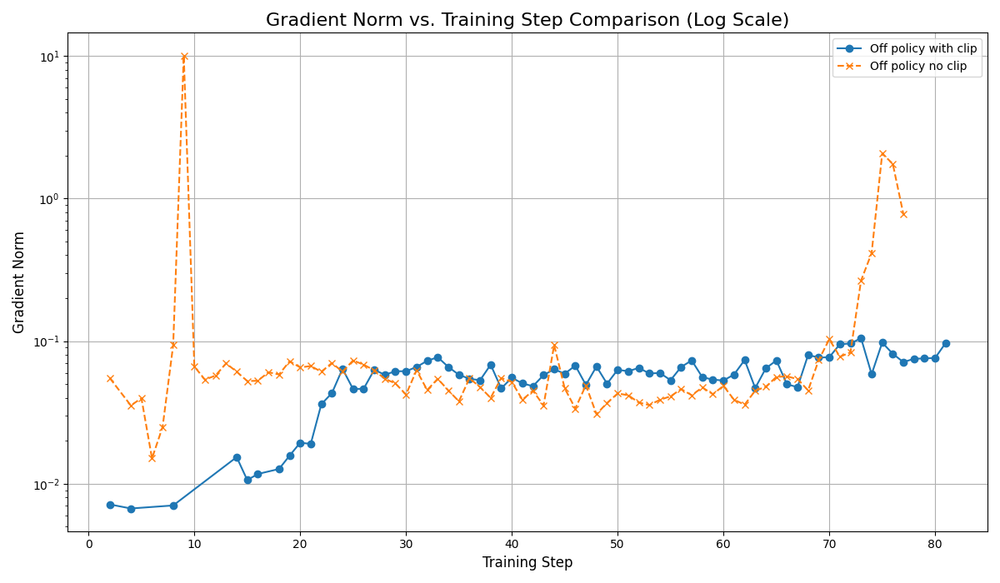 Grad norm comparision |
无裁剪策略的梯度范数（橙色线）在训练初期和后期均出现剧烈波动和峰值，表明存在梯度爆炸问题。这种不稳定的梯度更新直接引发了模型性能的崩塌。
相比之下，有裁剪策略的梯度范数（蓝色线）一直保持在较低且平稳的范围内。这证明梯度裁剪机制成功地限制了更新幅度，有效防止了梯度爆炸，从而保障了训练过程的稳定性和最终的良好性能。
使用Direct Preference Optimization (DPO) 来微调 Llama-3.1-8B 模型。其目标是使模型的回答与人类偏好对齐，使其更有用、更无害，同时避免了传统“基于人类反馈的强化学习” (RLHF) 的复杂性。
直接偏好优化 (DPO) 是一种使语言模型与人类（或AI生成）的偏好对齐的方法。传统的 RLHF 方法需要先训练一个独立的奖励模型，然后使用强化学习（如 PPO）来优化语言模型。与此不同，DPO 提供了一种更直接、更稳定的对齐方案。
DPO 的核心思想是使用一个偏好数据集，其中包含针对同一提示 (prompt) 的成对chosen(更受偏好的)和rejected(不受偏好的)。DPO 直接优化语言模型（策略模型），使其最大化生成chosen回答的概率，同时最小化生成rejected回答的概率。
该优化过程由以下loss function指导：
其中：
简单来说，这个损失函数鼓励策略模型 () 相对于参考模型 () 而言，为chosen回答 () 分配更高的概率，同时为rejected回答 () 分配更低的概率。
模型: Llama-3.1-8B
cuda:0 上。requires_grad=False)。它作为一个稳定的基线，防止策略模型在学习过程中过多地偏离其原始能力。它被放置在 cuda:1 上，以节省主 GPU 的显存。数据集: 使用了 Anthropic HH-RLHF 数据集。数据经过处理，提取出单轮对话，最终形成 (指令, chosen回答, rejected回答) 的三元组。
训练过程:
torch.optim.RMSprop，学习率为 。0.1。64 的批处理大小。代码会计算每个样本的损失，对其进行归一化，并在执行优化器步骤之前累积梯度。为了追踪训练进展，使用了一个简单直观的 验证准确率 (validation accuracy)。该指标衡量的是，在验证集中，策略模型能够正确地为“获胜”回答分配比“落败”回答更高的对数概率的样本比例。
ParseError: KaTeX parse error: Can't use function '$' in math mode at position 96: …}|x_i))}{N} 其中 $̲\\mathbb{I}$ 是指…
策略模型在处理后的 HH-RLHF 数据集上训练了一个 epoch。在训练过程中，每 5 个训练步 (training steps) 检查一次验证准确率。
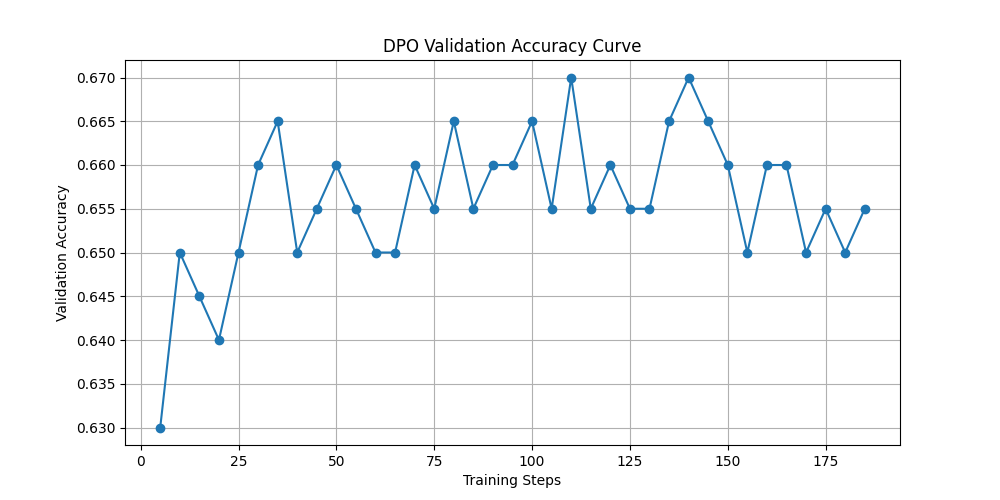